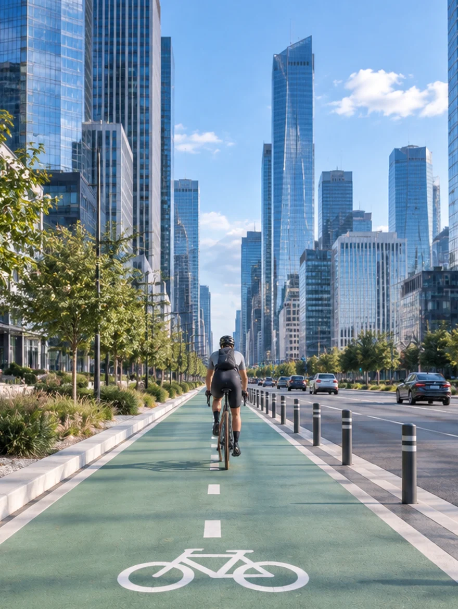
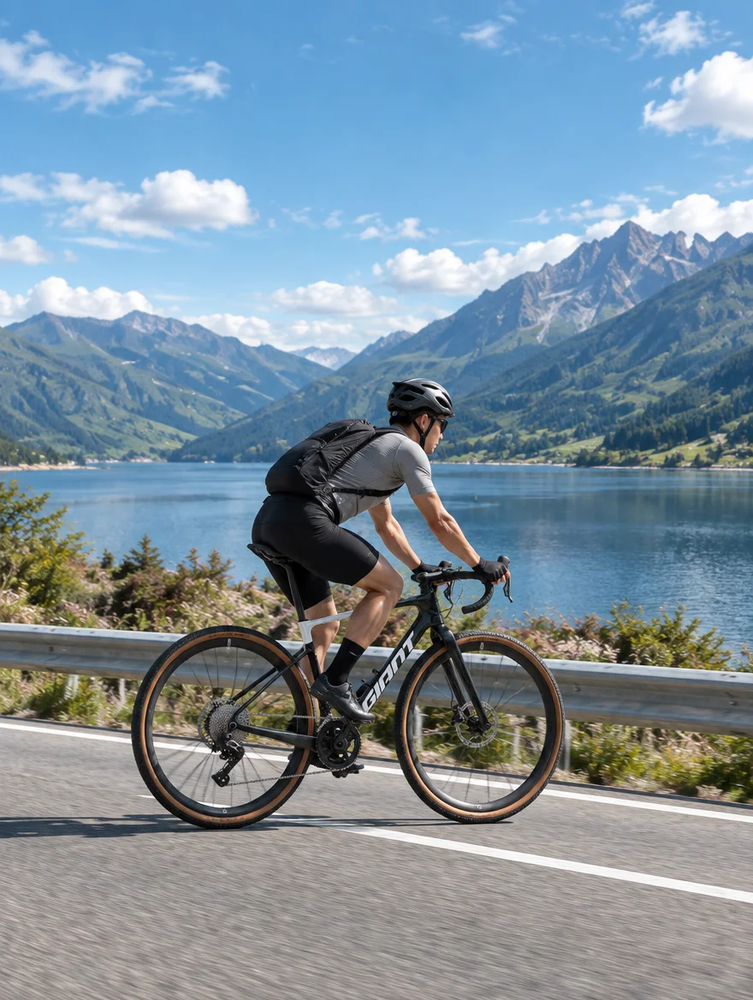
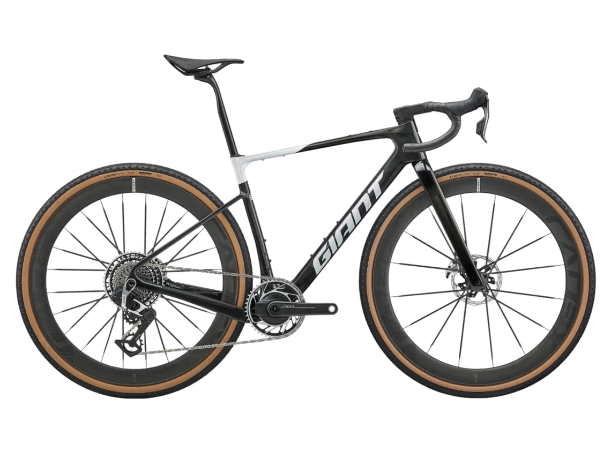
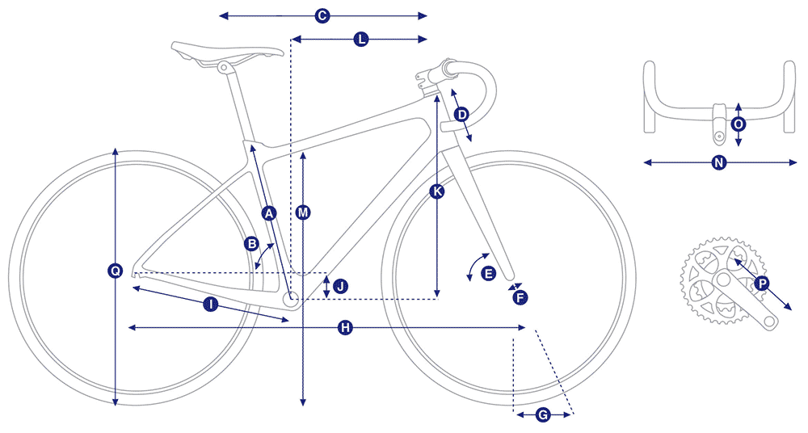
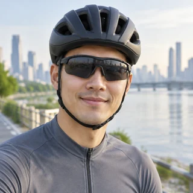
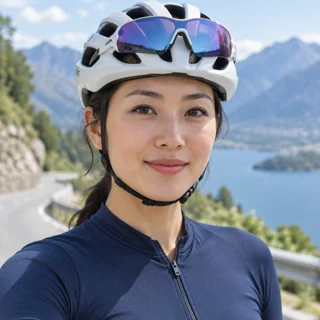
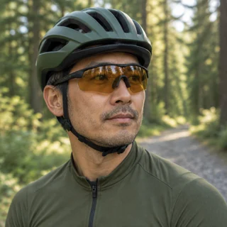

極致輕量傳動效率
車架與前叉皆為手工打造，採用最高級別的 Advanced SL 碳纖維，整車系統總重量省下 288 公克，搭配更寬外胎，操控更加靈活。



NT$ 308,000
GIANT 史上最輕量的頂級礫石賽車。
全系統整合設計，兼顧空力與操控，長途也能維持高速。

從車架、座艙到輪組，都為長距離 Gravel 賽事重新設計。以下是這一代最關鍵的三項升級。
車架與前叉皆為手工打造，採用最高級別的 Advanced SL 碳纖維，整車系統總重量省下 288 公克，搭配更寬外胎，操控更加靈活。
空力管型設計專為 Gravel 賽事真實發生的 30-45 km/h 實戰時速進行全面優化，整車系統相較於前一代省了 18.99 瓦的綜合總阻力。
擁有更低的 Stack、更長的 Reach、更戰鬥的座管角度，能引導騎士進入極具侵略性且符合空氣力學的低趴賽車姿態。
拉一下身高，對應的尺寸會標在右邊的幾何表上。
建議範圍取自官方尺寸指南，實際仍建議到門市試騎確認。

實際重量依車架尺寸與零件而異，請洽門市確認。規格如有變動，以官方公告為準。
城市日常
通勤單程 12 公里，本來以為這種等級的車在市區會太硬，寬胎反而把柏油路的細碎震動吃掉不少。最有感的是路口起步，輕到會想再多騎兩條街。

長距離挑戰
第一次騎一日北海岸，回程逆風那段還能維持速度，低趴的姿勢幫了很多。一百多公里下來，座管的緩衝比我上一台有感，隔天沒有想像中累。

探索未知
帶它上了兩次林道，碎石和產業道路都沒問題。下坡時前叉回饋很直接，一開始要花點時間適應，抓到節奏之後反而是最好玩的一段。
